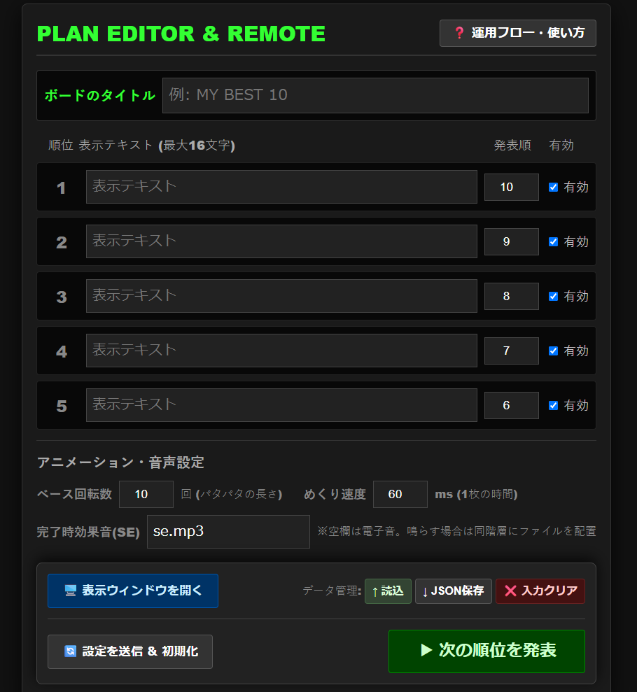
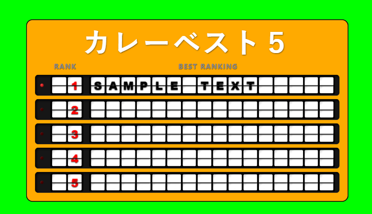

Best 10 Flipper - OBS Edition 取扱説明書
01. 💡 アプリの概要
本ツールは、OBS等のライブ配信ソフトで利用できる「パタパタ式（反転フラップ表示器）」ランキング発表装置です。
「操作用リモコン」と「OBS用表示画面」を分離したリモートコントロール方式を採用しており、誤操作を防ぎつつプロフェッショナルな演出が可能です。単一のHTMLファイルで構成されており、複雑なインストールは不要です。
ツール本体のダウンロード
配信で使用するための単体HTMLファイルを取得します。
Demo. 🎮 体験デモ (Interactive Demo)
実際のアニメーションとサウンドをブラウザ上で体験できます。下のボタンを押して順位を発表してみてください。（※音声が鳴ります）
※デモ版のジャン！はブラウザ内蔵音の合成音ですが、好きな音声ファイル（.wav や .mp3）に自由に変更できます。
02. 🛠️ セットアップ手順 (OBS設定)
手順1：操作用リモコンと表示ウィンドウの起動
ダウンロードしたツール本体 obs_ranking_board.html
をブラウザ（Chrome/Edge推奨）で開きます。これが「操作用リモコン」となります。

リモコン画面にある 「🖥️ 表示ウィンドウを開く」 ボタンを押し、緑色背景の「表示専用モニター」をポップアップさせます。
手順2：OBSへの取り込みとトリミング
OBSのソースから 「ウィンドウキャプチャ」 を追加し、先ほど開いた「表示専用モニター」のウィンドウを選択します。
画面に余計な枠やブラウザのUIが映り込んでいる場合は、OBSのプレビュー画面上で Alt キーを押しながら赤い枠線の端を内側へドラッグ し、必要なパタパタ装置の部分だけが残るように表示領域を調整（クロップ）してください。
手順3：クロマキーによる背景透過
OBSのソースリストで、追加したウィンドウキャプチャを 右クリック ＞「フィルタ」 を選択します。
左下の「＋」ボタンから 「クロマキー」 を追加し、色タイプを「緑」に設定して閉じてください。これで背景の緑色が透過され、配信画面に綺麗に合成されます。
03. 📺 配信中の基本操作
-
設定 : リモコン画面で順位・テキストを入力し「有効」チェックを確認します。
-
同期 : 「🔄 設定を送信 ＆ 初期化」 を押すと、表示画面が新しい設定でリセットされます。
-
発表 : 「▶ 次の順位を発表」 を押すと、設定順に従って1位ずつパタパタとアニメーションします。
04. ⚙️ 詳細設定とカスタマイズ
リモコン下部の設定エリアで以下の調整が可能です。
- ベース回転数 : パタパタの回転数です。数字を大きくすると回転時間が長くなります。
- めくり速度 : パネル1枚あたりの速度(ms)です。値を小さくすると高速になります。
完了時効果音(SE)の設定
独自の「ジャーン！」という音源を鳴らしたい場合、HTMLファイルと同じフォルダに音声ファイル（例: se.wav）を配置してください。
設定欄にファイル名を入力して「送信」することで、発表完了時にその音が再生されます。空欄の場合は、システム標準の電子音が鳴ります。
05. 🎨 オリジナルデザインの作成
「OBS Ranking Board Generator」を使用すれば、ブラウザ上で自由にランキングボードの色やデザインをカスタマイズし、自分専用のパタパタ装置を作成することができます。

06. ⚠️ 【重要】配信終了時の注意点 (放送事故対策)
ランキング発表が終わり、ツールを使い終わった際に「表示専用ウィンドウ」をそのままブラウザの「×」ボタンで閉じるのは非常に危険です。
OBSのウィンドウキャプチャは、対象のウィンドウが消えると背後にある別の無関係なウィンドウ（個人的なブラウザ画面やフォルダ等）を自動的に掴んで配信画面に映し出してしまう現象が起こり得ます。
07. 📝 その他の運用注意点
- ファイル配置: HTMLと設定ファイル（音声やJSON等）は必ず同じフォルダ内に置いてください。
- 通信の制限: リモコンと表示画面は同じブラウザで開く必要があります。
- ポップアップ許可: 表示窓が開かない場合は、ブラウザ設定からポップアップを許可してください。
- 表示ウィンドウを開く: ランキングの表示テキストを入力してからボタンをおしてください。
08. 💾 データのバックアップ
「↓ JSON保存」 ボタンで、現在の設定をファイルとして保存できます。
万が一、ブラウザのデータがクリアされた場合でも、保存したJSONファイルを読み込ませることで設定を復元可能です。